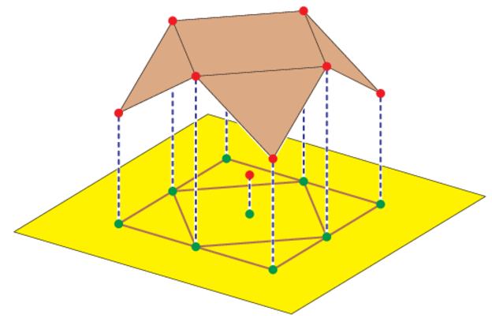

Motivation
The picture at right is a toric Bézier patch(4×3 tensor product patch in R3).
Click on it for a movie, which is the motivation
for the mathematics in this talk.
Subsequent pictures on this page accompany this talk.

MotivationThe picture at right is a toric Bézier patch(4×3 tensor product patch in R3). Click on it for a movie, which is the motivation for the mathematics in this talk. Subsequent pictures on this page accompany this talk. | |
|
Bézier Patches | ||||
|
This shows the rational normal cubic in the standard simplex in RP3+ and its image in R2 under a map πb. The image is a Bézier cubic in the plane. The control points are the endpoints of the segments (control polygon). |
Here is a 3×3 tensor product patch, showing control points. The 'cage' is the 3D analog of the control polygon. |
|||
Upper Hulls and Convex Subdivisions |
|  |